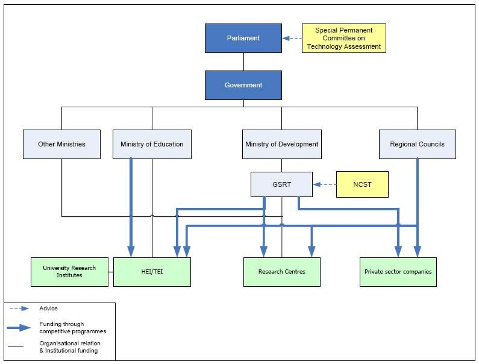

3.1. Overview
The arts and humanities disciplines in Greece have a long history in teaching and research practice in established academic institutions, organizations, research centres and learned societies. The majority of them have demonstrated a keen interest in the advantages of digitization. They have welcomed the EU funded initiatives on content digitization and have participated in a plethora of projects. The emphasis of the calls was on public use of the digitized material and on bulk digitization. Yet, standards and best practice guidelines were late to appear and when they did, they were not adopted by all beneficiaries. Indeed, in some cases, institutions laid emphasis on bulk digitization ignoring best practice guidelines, while in other cases best practice guidelines were adopted, but institutions were skeptical as to the use rights and the extent of exploitation, accessibility and presentation of the digital content.
Digitized resources are indeed a prerequisite for digital research, which has already begun in Greece. Internationally, digital research and teaching methods are being rapidly transformed by progressive humanists willing to experiment in the direction of a more communicative and productive research model. On the the other hand, Greek scholars in the arts and humanities still tend to adhere to the traditional research path and seem to only slowly experiment with and adopt new methods of digital scholarship.
So far, although the quantity of the digitized material and the adoption of international documentation standards has been achieved to a satisfactory extent, a systematic and organized normalization effort is required, before we can fully exploit the available wealth of digital resources and before we can contribute to the elaboration of new digital research methods. Universities and Research Centres are the main protagonists of humanistic research in Greece, and some of the institutions in question have already demonstrated an outstanding performance in developing tools and methods of digital scholarship.
Twenty-two universities are the main research institutions in all disciplines (including arts and humanities). Together, universities and public research centres are responsible for 69% of the Gross Domestic Expenditure on R&D, while private R&D performers have the lowest share (approximately 30% of GERD) among the EU member states (DG Research, 2008).
3.2. National Government agencies
Research policy in Greece is formulated by a limited number of state institutions and agencies. First of all, the Ministry of Economy, Competitiveness and Shipping is the authority responsible for the central management of the Structural Funds and distributes them to ministries, thus being indirectly involved in Research & Development policy.
The General Secretariat for Research and Technology (GSRT), which until recently fell under the jurisdiction of the Ministry of Development, is considered the main policymaker and the main funding agency. Recently, the General Secretariat for Research and Technology has been moved to the jurisdiction of the Ministry of Education, a development that is expected to foster research in universities and to facilitate the formulation of a comprehensive research policy and its integration with teaching.
At present, the General Secretariat for Research and Technology supervises 12 of the 18 public research centres in Greece. The National Council for Research and Technology is the main advisory body for research policy and is attached to the General Secretariat for Research and Technology. The same body sets the priorities for research funding and advises on the selection of the Boards of Directors for the public research centres. One of its five departments acts as the advisory organ responsible for research in the social sciences and the humanities. At one point, the Greek Parliament also had a Special Permanent Committee on Technology Assessment, which operated occasionally and has finally been deactivated.
The diagram below represents the structure of the Greek research system before the recent government restructuring. Since then, the Ministry of Development has merged with the Ministry of Finance to form the Ministry of Finance, Competitiveness and Shipping, while the General Secretariat for Research and Technology has been transferred to the Ministry of Education, Lifelong Learning and Religious Affairs.

Figure: Overview of the governance structure of the Greek research system.
Source: ERAWATCH Research Inventory
The bodies responsible for Greek strategic planning for research and innovation are mainly concerned with applied research and its relationship with industry. Arts and humanities receive only cursory reference in the Greek strategic plan for research and technology and there is no government body specifically responsible for research planning for the humanities. Neither is there a comprehensive national digitization strategy, but rather individual digitization projects funded either by EU structural funds or other sources. There is not even a clear strategy that would provide guidelines to individual research institutes, museums, archives or collections for the documentation, digitization and preservation of digital cultural heritage, let alone an educational strategy for the encouragement of digital scholarship.
Basic research, humanistic research in particular, ranks very low in research strategy priorities. The lack of strategy in this field is manifested in the absence of major competitive calls for digitization projects targeted toward the arts and humanities, with the notable exception of the digitization projects completed in the context of the Operation Programme "Information Society, 2000-2006". The reluctance of the state to systematically fund and coordinate digital research in the humanities is so far only partly compensated by sponsorships from banks and other private funding bodies. Uncoordinated projects initiated by research and cultural heritage institutions funded in this manner, however, are limited in scale and result in duplication of efforts and waste of resources. Furthermore, in many cases, once the projects were completed, institutions have been unable to finance the maintenance and curation of the digitized material.
Besides, a significant amount of research effort and funding is still concentrated in producing scholarly results in the traditional way, in print form, a method that is of limited use to digital scholarship. Signs of change are under way, but unless coordination is secured, these efforts will remain fragmentary, duplication will be unavoidable and, what is worse, maintenance and curation will remain problematic.
Recently, the Ministry of Culture to Ministry of Culture and Tourism published a draft strategic plan that outlines the main directions the Ministry intends to focus on. The vast digital cultural content created in the context of the Operation Programme "Information Society, 2000-2006" (200 websites with digital cultural content of hundreds of thousands of digitized documents, images, video, audio, film, three-dimensional objects and monuments), will be subjected to further elaboration to ensure the expansion, maintenance and easy and integrated access to it. The ambition of the Ministry of Culture is to convert the entire Greek cultural reserve into digital form and to ensure public access to cultural content. The vision is to create a National Cultural Knowledge Web, which will enable information sharing, training, knowledge transfer and provision of digital services to all Greek citizens and the international community.
Furthermore, in a broader perception of cultural politics, the Ministry will develop a National Strategy for Culture in the Fourth Community Support Framework. This strategy will encourage actions indirectly connected to arts and humanities research, such as: facilitating access to a scientifically selected and documented digital cultural content, the production, exchange and export of expertise, the ongoing design and implementation of innovative applications supporting culture. It will furthermore ensure interoperability between all systems that provide cultural content and services and the protection of intellectual property rights.
3.3. European Directives and Greek policy
European Framework Programmes have operated for 25 years, starting with the FP1 in 1982. Over the last 13 years in particular, this funding instrument has enabled funding of various socio-economic sciences and humanities projects. The Research and Technology Development policy in Greece adopted the main strategic choices prescribed by the European Commission and the Operational Programmes aiming at convergence among EU Member States. So far policies have focused on the establishment of infrastructures, such as the National Research and Technology Network and the electronic infrastructures of the National Documentation Centre (NDC).
The National Documentation Centre is the national institution for documentation, information and support of scientific research and technology issues. It is integrated with the National Hellenic Research Foundation (NHRF) and is supervised by the General Secretariat for Research and Technology. It provides services to the country's entire scientific and business community, universities, research centres, enterprises and public and private sector institutions. It also offers advice and support to Greek organizations for participation in competitive European research programmes. The Centre receives funds from the state budget and the public investment programme, as well as from competitive national and European programmes.
Another important service that owes its existence to a European directive of the 2nd Framework Programme of the European Union (EU) was launched with the establishment of the Greek Research and Technology Network (GR-Net). The goal of GR-Net is to provide services of national and international interconnection and capacity to all educational and research institutions.
During the following programming period, the Greek Community Support Framework 2000-2006 covered the cultural domain among others. In that context, it aimed to maintain and upgrade museum infrastructures, improve museum services and showcase single monuments and archaeological sites. There was also priority for upgrading the technical infrastructure of services pertaining to the planning, implementation, financial management, inspection and assessment of the cultural sector. Some of the 93 projects approved under this scheme were: The New Acropolis Museum, the Cultural Centre for the Benaki Museum, the Mycenaean Museum Exhibition, The new Archaeological Museum in Ancient Olympia.
Its follow-up is the National Strategic Reference Framework 2007-2013 and in particular the “Digital Convergence” Operational Programme that aims at Knowledge Society and Innovation, focusing on the improvement of the educational system and the promotion of innovation in all sectors for the restructuring of the economy and the transition to a knowledge economy. In a broader sense, this strategy also applies to research and in particular to the humanities research community. It may therefore provide funding opportunities for the promotion of digital research in the arts and humanities.
Besides, as far as research in the stricter sense is concerned, during the last decade, the European Research Area (ERA) goals formulated by the EU in 2000 have been adopted by both the government and the academic community as an opportunity to share and contribute to international knowledge, to exploit sources of funding and increase the national research capacity. Gradually, Greece has become more aligned with the main targets of the ERA by promoting the mobility of researchers, opening-up national programmes to cross-border co-operation, participating in joint projects with other EU Member States within the framework of bilateral agreements, and most recently by participating in projects on the ESFRI roadmap, namely in the preparatory phase of 13 European Research Infrastructures. DARIAH, CLARIN, CESSDA and SHARE are the Social Science and Humanities RI Greece is involved in.
The Lisbon Strategy prescribes a policy, whereby humanities research must find a way to connect its research objectives and knowledge creation to economic and social development. The combination of humanities and socio-economic sciences can add value, develop new research perspectives and assist in policy formulation. Therefore, researchers in the humanities must co-operate with other disciplines in a multi-disciplinary approach. To this end, the establishment of both physical and virtual infrastructures on a pan-European level is also of great importance and will have a cumulative positive impact on this new European policy.
Having adopted the Lisbon strategy, Greek policy makers aspire to create internationally competitive centres of excellence in high technology sectors to provide and share resources, technology and innovation. Therefore, a policy of international cooperation with organizations from other countries is strongly encouraged.